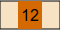

الجدران المكسورة
تتصل الغرف الدائریة بالممرات التي یتم أحیانا سّدها باستخدام الجدران.
مثال لذلك، هنا ممر تم سده باستخدام ثلاث جدران:

فیما یلي مثال على ممر مسدود بسمك 12 وحدة:

قم بكسر أقل عدد ممكن من الجدرانعدد ممكن من سمك الجدارن لإكتشاف الغرف الدائریة والعثور على الكنز.
لكسر جمیع جدران الممرحائط، انقر فوق الممر..